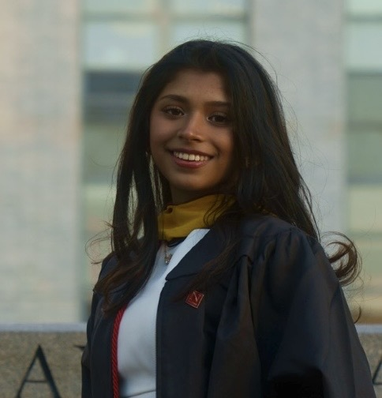

About Me
Hi! My name is Melissa Rejuan. I grew up in Staten Island, New York and moved to Boston in 2021 to pursue a Bachelor’s in Data Science and Journalism at Northeastern University. I graduated in Fall 2025 and I continued my education at Northeastern, pursuing a Master’s in Data Science via the PlusOne program. My time at Northeastern was deeply valuable. I did my first co-op at Insulet and then my second one at The Boston Globe. I studied abroad in Spain for a few months and produced a short documentary while I was there. After I came back, I decided to pursue my own venture! I founded a start-up called Navda AI, where we provide AI receptionist services across various industries. Currently, I am working on finishing up my masters, which will be done in August! Aside from my education and work experience, I love to cook, bake, and watch documentaries. I am a big history fan. I love to spend time with family, friends, and go on runs, specifically at scenic parks!